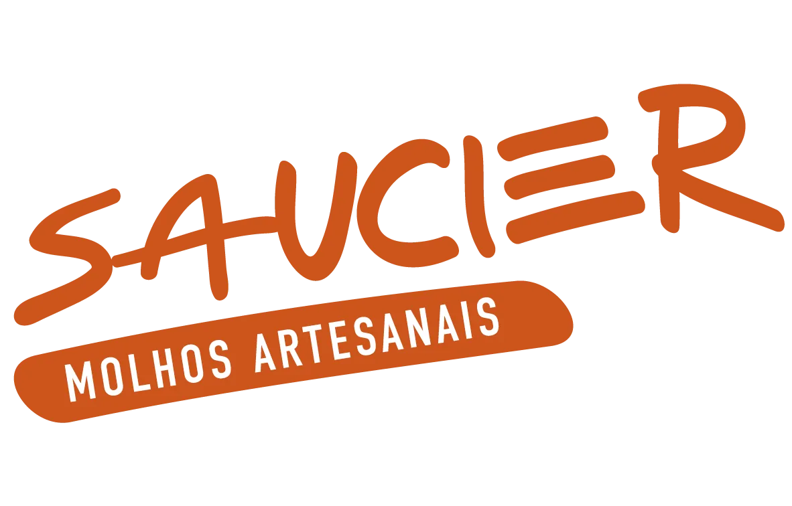
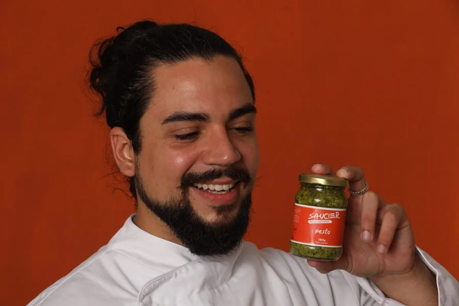

10% reservado15:00
Eu vendi molho de porta em porta no Rio, pra 246 famílias, antes de virar professor. Hoje eu ensino a técnica na panela de casa.
Eu te faço 10 perguntas rápidas sobre a sua cozinha e te devolvo, aqui mesmo, os 3 molhos pra você começar esta semana. Pra gente conversar direito, me diz seu nome.
Três minutos. Sem spam.
É pra lá que vão os 3 molhos, com o módulo do curso que ensina cada um, e o ebook Pesto pelo Mundo. E é a partir de agora que eu seguro 10% no curso por 15 minutos, caso você queira ir além.
Se quiser que eu te lembre do primeiro molho no domingo, me deixa seu WhatsApp. Se não quiser, pula: o roteiro vai por e-mail de qualquer jeito.